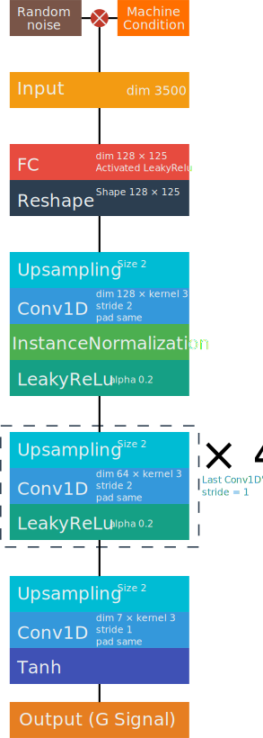
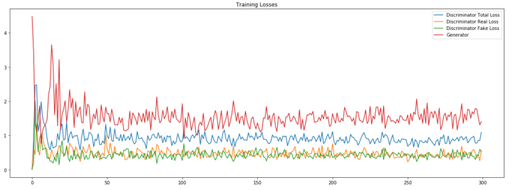
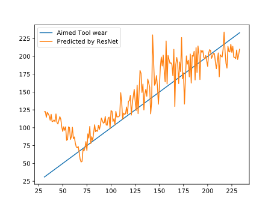

Digital Twins of Machining Tool
By Deep Conditional Convolutional Generative Adversial Network
Unsupervised
DCGAN is an advanced unsupervised approach to clone the distribution of real signal data. Upsampling and Convolutional layer constitute transpose convolutional layer to generate hierarchy signal blueprint. By competition between discriminator and generator, it's easy to re-create realistic signal.
Since the data is obtained by unsupervised approach, the final result could be not stable. In addition, because the optimization point is located at one saddle point of G-D tensor space, it make optimization even harder.
End-to-end Design
Key to simplify model's design is to using end-to-end architecture. The hybrid of generative and discriminative network allows model to simplify both train and application process.
Fed with high-dimensional random noise, GAN can give diverse signal sample which is hard for machine to recognize validity. By progressive deep-learning training, generative network is able to evolve itself. A remarkable signal could be obtained after proper epoch of deep learning training.
General
There is no requirement for distribution of original data. It enable the widespread use of GAN in general circumstances. The only thing GAN need to do is clone the siblings of signal data. By introducing lantent space parameter(z), GAN can generate the corresponding signal. It could help us to reinforce data, diagnose failure and optimize the best machining parameters by searching z tensor space. It can be the fundamental ground research which enable network to handle realtime machining just like AlphaGo.
Co-evolution
GAN training implements game theory that makes G and D network compete to exploit their performance. Generative network(G) tries to generate realistic signal to deceive discriminative network(D). D tries to identify the validity of given signal. Finally, both network achieve nash balance which means discriminator fails to recognize signal and generator can give sequence whose data distribution is the same as original sample.
Nash balance
Since the limit of sample's size and optimization's location, training of GAN is hard. Also, because range in every dimension is different, the compound tensor may not be so accurate. But the tendency shows that GAN can clone data well.

The architecture of Generative Adversial Network(GAN) and digital twins' relation to it
Discriminative Network
The core of discriminator is classical post-activation design. By MLP architecture, discriminator can extract features of machining signal at every abstract level.
The discriminator is fed with signal which may comes from real data and fake data generated by G-network. This network will output a binary value recognizing validity of given sequence. Trained with Adam optimization (learning rate 0.0001 and \( beta_1 \) 0.5), the discriminator will adapt itself to identify signal.
Loss function
The loss function is binary crossentropy which is used for binary recognition.
$$ loss = -\sum_{i=1}^{n}\hat{y_i}logy_i+(1-\hat{y_i})log(1-y_i)\\ \frac {\partial loss} {\partial y} = -\sum_{i=1}^{n}\frac {\hat{y_i}} {y_i}-\frac {1-\hat{y_i}} {1-y_i} $$
Technical Tricks
In order to prevent sparse features, leaky rectified linear unit(LeakyRelu) activation is used. In practical training of GAN, discriminator can always easily recognize whether given signal is true or fake. In order to make competition stable, dropout layer with fair large dropout rate is applied. Because of prior success in monitoring realtime tool wear, a descending dimension is implement in convolutional layer.

The discriminator's architecture. (This architecture may change according to latest development progress)
Generative Network
The core of generator is upsampling-convolutional deconvolution structure. Upsampling enables signal to reshape and convolution allows information fusion at different time of sequence. InstanceNormalization can better normalize features and avoid sparse characteristics in generative model. LeakyRelu as the non-sparse activation function can reduce features' redundancy.
The generator is fed with signal which combined both noise(Usually Gaussian distribution) and machining condition(need rescale method). This network will yield a signal corresponding to given machining condition. Trained with Adam optimization (learning rate 0.0001 and \( beta_1 \) 0.5), the generator will adapt itself to produce signal according to machining condition.
Rescale method
For different machining condition, a separate rescaling method should be taken for better GAN training.
-
For discrete machining condition
For many machining condition, the change is not continuous. For example, machining tool type, workpiece material and milling approach could all be considered discrete status. In this case, embedding layer should be taken into use. This layer can implicitly indicates the relation among different status and decrease calculation cost. In addition, if machining condition is complex and representing tensor is high dimensional, the sparse vector will increase unnecessary cost and impede further immigration to new machining condition.
When network is trained, all embedding tensor will be updated. By calculating the similarity of different status, many features could be reused to increase accuracy and generality. It's also helpful when later transfer learning is applied.
-
For continuous machining condition
Continuous variables are also common in processing workpieces. For example, spindle speed, feed rate, machining temperature and cut depth could set at any given figure. In this case, full connected layer should be used to rescale parameters. In this layer, it can be simplified as a linear transformation \( y = a \times x + b \). If you know exact proper scaling methods, it's better to directly transform the variable before training model.
Later, processed machining factor will be multiplied with rescale factor as the input of generator. This is the reason why DCGAN is prefixed with C which indicates conditional.
Technical tricks
The techniques applied in generative model are the same as discriminative one.

The generator's architecture(This architecture may change according to latest development progress). × rounded by red dot means multiply operation.
Training Process
The ideal mode of training is that G and D network compete to achieve nash balance. The best condition is that accuracy of D is fluctuated around 50%. However, due to some reasons we have hardly known, D's accuracy is unusual high which means D is very smart to recognize signal's validity. Even we increase dropout and G's complexity, the phenomenon is still not apparent to see. But after exam generative signal with high-accurate ResNet, the signal could be accepted in a way. Also, by observing final signal sample, it seems like experimental signal.

The training example of GAN. The example is not related to this experiment!

The generated signal after 57000 epoch evaluated by ResNet. The tendency shows that generator can simulate tool wear tendency well. Due to my error, legend of this graph is not given. The x-axis is given tool wear and y-axis is estimated value examined by ResNet.